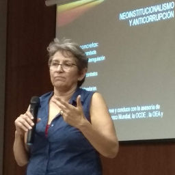

Sistema Nacional Anticorrupción Fundamentos

Lourdes López Flores
Es Licenciada en Ciencias Políticas y Administración Pública por la Universidad Autónoma de Nuevo León (1985); Maestra en Educación, con especialidad en Docencia a Nivel Superior, por la Universidad de Monterrey (1996); Diplomada en Comunicación Política y Análisis Político y Prospectivo por la Universidad Iberoamericana (1998) y; Doctora en Política Pública por el Instituto Tecnológico y de Estudios Superiores de Monterrey (2012).
Se desempeñó como funcionaria electoral en el Instituto Federal Electoral, donde trabajó en los ámbitos distrital, en Nuevo León y local, en el estado de Coahuila, para posteriormente ser designada como Consejera en el Consejo General del mismo Instituto, cargo que cumplió durante el periodo 2003-2008. En el Consejo General del IFE, presidió las Comisiones de Contraloría Interna y del Servicio Profesional Electoral; además fue miembro de las Comisiones de Fiscalización de los Partidos Políticos, Capacitación Electoral y Educación Cívica y de Organización Electoral.
Actualmente es docente en los programas de maestría y licenciatura de las Facultades de Ciencias Políticas y Relaciones Internacionales de la UANL y en la Facultad Libre de Derecho de Monterrey. Ha impartido las materias de Teoría General de la Rendición de Cuentas y Modelos de Rendición de Cuentas, en el programa de posgrado en materia de Gobierno Abierto y Rendición de Cuentas, en la Facultad de Jurisprudencia de la Universidad Autónoma de Coahuila (2016).
Es especialista en materia electoral, procesos de cambio institucional y análisis político de los costos de transacción.
Ha colaborado como analista en diversos medios de comunicación impresos y electrónicos.